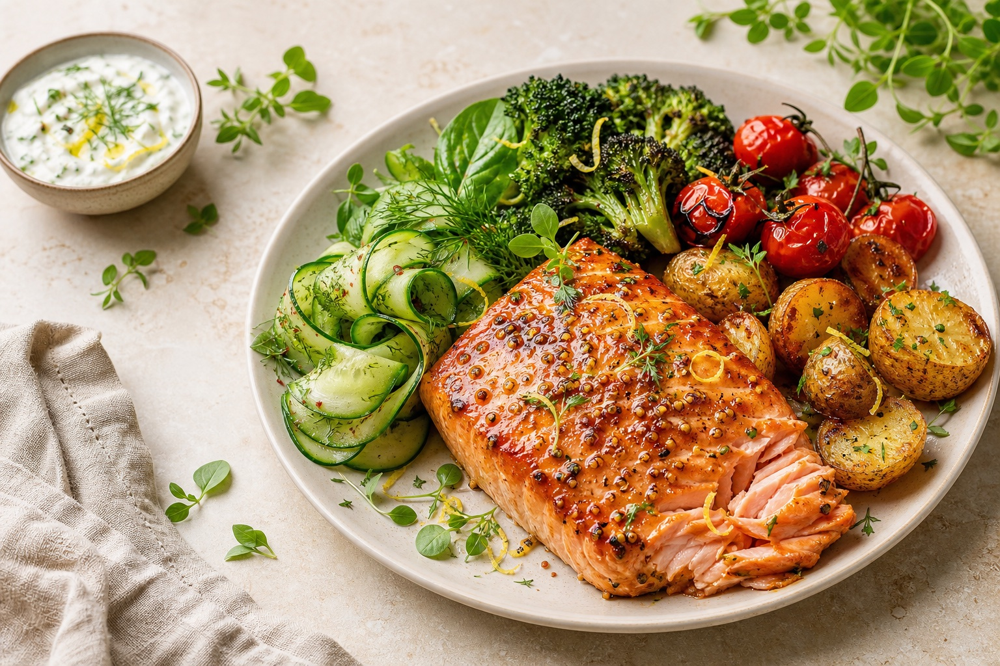

Як складати повноцінну їжу без ваг, підрахунку калорій і суворих заборон
Посібник для повсякденного життя · 2026
Перед початком
Вам не потрібно змінювати все харчування за один день. Прочитайте посібник один раз, а потім оберіть один прийом їжі та застосуйте до нього формулу тарілки.
Що вже є на тарілці? Не оцінюйте — просто назвіть компоненти.
Чого бракує для балансу: овочів, білка, гарніру чи жирів?
Як змінюються ситість, енергія та задоволення після їжі?
Збалансована тарілка — орієнтир, а не іспит. Пропорції можуть змінюватися залежно від апетиту, активності, доступних продуктів і контексту.
Урок 1
Ситість — це не лише об’єм їжі. На неї впливають склад, смак, темп прийому їжі, сон, стрес і час від попереднього прийому їжі.
Допомагає довше зберігати ситість і бере участь в оновленні тканин. Джерела: риба, м’ясо, яйця, молочні продукти, бобові, тофу.
Додає об’єму та підтримує травлення. Джерела: овочі, фрукти, бобові, цільні крупи, насіння.
Основне доступне джерело енергії. Перевага цільним продуктам не означає заборону хліба, пасти чи десертів.
Допомагають засвоювати жиророзчинні вітаміни й роблять їжу смачнішою. Важливі помірність і різноманіття джерел.
У салаті може бути багато об’єму, але мало енергії та білка. Невдовзі організм закономірно попросить ще їжі. Це не брак сили волі — це недостатньо повноцінний прийом їжі.
Практика. Після наступного прийому їжі оцініть ситість через 30 хвилин і через 2–3 години за шкалою від 1 до 10. Не прагніть «правильної» цифри — збирайте спостереження.
БАЛАНС.03Урок 2
Свіжі, запечені, тушковані, заморожені — спосіб не принциповий. Частину можна замінити фруктами.
Порція приблизно з долоню — лише візуальний орієнтир, а не сувора норма.
Крупи, картопля, паста, хліб, кукурудза. За високої активності порція може бути більшою.
Жири: олія, горіхи, насіння, авокадо, сир або жирна риба. Напій: вода за спрагою. Смак: спеції, соуси й улюблені додатки допомагають отримувати задоволення та дотримуватися звички.
Формула описує середні пропорції, а не обов’язкову геометрію кожної страви. Суп, рагу, пасту або сендвіч можна подумки розкласти на ті самі компоненти.
БАЛАНС.04Урок 3
| Овочі та фрукти | Білок | Гарнір | Жири та смак |
|---|---|---|---|
| Броколі Цвітна капуста Морква | Курка Індичка Пісна яловичина | Гречка Вівсянка Булгур | Оливкова олія Горіхи Насіння |
| Помідори Огірки Перець | Риба Морепродукти Яйця | Рис Кіноа Кускус | Авокадо Тахіні Песто |
| Капуста Буряк Гарбуз | Кисломолочний сир Йогурт Сир | Картопля Батат Кукурудза | Сметана Сир Йогуртовий соус |
| Заморожені суміші Квашені овочі Зелень | Сочевиця Квасоля Нут | Цільнозерновий хліб Паста Лаваш | Хумус Оливки Насіння льону |
| Яблука Ягоди Цитрусові | Тофу Темпе Соєвий фарш | Перлова крупа Пшоно Хлібці | Гірчиця Соєвий соус Спеції |
Овочі, ягоди та риба з морозилки заощаджують час і залишаються повноцінною частиною раціону.
Квасоля, нут, тунець, кукурудза й томати без складного готування допомагають скласти їжу за хвилини.
Запишіть по одному продукту з кожної категорії, який легко придбати й приємно їсти.
БАЛАНС.05Урок 4
Зранку не обов’язково їсти «сніданкові» продукти. Працює та сама логіка: джерело білка + вуглеводи + овочі або фрукти + трохи жиру.
Вівсянка + густий йогурт + ягоди + горіхи. Білок і жири роблять кашу ситнішою.
Яйця + хліб + овочі + авокадо. Розмір порцій визначайте за апетитом.
Кисломолочний сир або йогурт + банан + мюслі + насіння. Підходить і як перекус.
Сендвіч з індичкою або хумусом + овочі + фрукт. Зручно скласти заздалегідь.
Оберіть 2 компоненти: вуглеводи або фрукт + білок чи жир.
Приклади: яблуко + горіхи; хлібці + кисломолочний сир; банан + йогурт; овочі + хумус.
Кава — напій, а не прийом їжі. Якщо зранку немає апетиту, почніть із невеликого варіанта й поспостерігайте, як це впливає на вечірній голод.
БАЛАНС.06Урок 5
Урок 6
Зручний запас важливіший за ідеальне меню. Оберіть 2–3 продукти з кожної групи — цього достатньо для десятків комбінацій.
| Овочі та фрукти | Білок | Гарнір | Додатки |
|---|---|---|---|
Спочатку використовуйте те, що вже є. Перед магазином зазирніть у холодильник і морозилку. Плануйте страви навколо продуктів, які потрібно з’їсти раніше.
БАЛАНС.08Урок 7
Шукайте страву зі зрозумілим джерелом білка й гарніром. Овочі можна замовити салатом або гарніром окремо.
До піци додайте салат; до супу — сендвіч або білкову закуску; до суші — едамаме або салат.
Поєднуйте доступне: йогурт + банан + горіхи; сендвіч + овочі; сир + хліб + фрукт.
Ви не зобов’язані складати ідеальні пропорції. Оберіть те, чого хочеться, додайте доступні овочі й зупиніться на комфортній ситості.
| Якщо хочеться... | Можна додати... |
|---|---|
| Піцу | Салат або овочеву нарізку; за бажання — білкову закуску |
| Пасту | Курку, тунця, бобові або сир + овочі |
| Картоплю | Рибу, яйця або м’ясо + салат |
| Десерт | Нічого обов’язкового. Їжте його із задоволенням; якщо голодні — спочатку повноцінну їжу |
Не намагайтеся одночасно обрати «найкорисніше», мінімальну калорійність та ідеальний розмір порції. Запитайте: «Як зробити цей прийом їжі трохи повноціннішим?»
Навичка
Формула тарілки допомагає зі структурою, але не замінює сигналів тіла. Ваш апетит закономірно змінюється щодня.
| Рівень | Як може відчуватися | Що можна зробити |
|---|---|---|
| 1–2 сильний голод | Слабкість, дратівливість, складно обирати й їсти повільно | Поїсти якомога швидше; не вимагати від себе ідеального рішення |
| 3–4 помірний голод | Порожнеча в шлунку, думки про їжу, зниження концентрації | Зручний момент для повноцінного прийому їжі |
| 5–6 нейтрально | Комфорт, їжа не займає уваги | Можна продовжити справи або завершити їжу |
| 7–8 ситість | Задоволення, відчуття наповненості без важкості | Комфортна точка завершення для багатьох, але не сувора мета |
| 9–10 переповнення | Важкість, сонливість, дискомфорт | Не компенсувати голодуванням; зробити висновок із контексту й рухатися далі |
Систематичне недоїдання посилює думки про їжу та ймовірність переїдання пізніше.
Смак — повноцінна частина харчування. Задоволеність допомагає завершити прийом їжі.
Спостереження замість оцінки. «Я переїла, бо довго не їла» корисніше, ніж «у мене немає сили волі». Перше дає інформацію на наступний раз.
БАЛАНС.10Шаблон
Плануйте не рецепти, а комбінації. Залиште 1–2 вікна для доставки, залишків або спонтанного вибору.
| День | Основна комбінація | Швидкий запасний варіант |
|---|---|---|
| Пн | ||
| Вт | ||
| Ср | ||
| Чт | ||
| Пт | ||
| Сб | ||
| Вс |
Зваріть одну крупу, підготуйте одне джерело білка, вимийте овочі, змішайте соус. Не обов’язково готувати всю їжу заздалегідь — достатньо скоротити кількість рішень.
Практичний орієнтир
Формула ½ + ¼ + ¼ показує співвідношення компонентів, але не визначає одну правильну кількість їжі для всіх.
18–20 см
Може підійти для перекусу, невеликого сніданку або коли апетит нижчий, ніж зазвичай.
22–25 см
Зручний стартовий орієнтир для обіду чи вечері. Метод CDC/ADA часто демонструють на тарілці близько 9 дюймів — приблизно 23 см.
26+ см
Пропорції залишаються тими самими, але не обов’язково заповнювати тарілку до країв.
Антиміф
Для більшості здорових людей немає універсальної заборони поєднувати білки з вуглеводами, фрукти з іншою їжею або молочні продукти з рибою.
«Шлунок не може одночасно перетравити різні типи продуктів».
Травна система пристосована до змішаних страв. Саме так виглядає більшість звичайних прийомів їжі.
| Ситуація | Можлива причина | Що робити |
|---|---|---|
| Молочне викликає гази або діарею | Можлива непереносимість лактози | Вести щоденник симптомів і звернутися до лікаря; не виключати всю групу навмання |
| Бобові або капуста спричиняють здуття | Ферментація окремих вуглеводів і різке збільшення клітковини | Почати з меншої порції, збільшувати поступово |
| Реакція на конкретний продукт | Індивідуальна непереносимість, алергія або захворювання ШКТ | Фіксувати продукт, кількість і симптоми; обговорити з фахівцем |
Непереносимість частіше пов’язана з травними симптомами. Набряк губ, язика чи горла, утруднене дихання або генералізована кропив’янка можуть бути ознаками тяжкої алергічної реакції та потребують невідкладної допомоги.
Без підтвердженого діагнозу не починайте сувору безглютенову, безлактозну або low-FODMAP дієту самостійно: зайві обмеження можуть збіднити раціон.
БАЛАНС.13Вечірнє харчування
Їжа після певної години не стає автоматично «шкідливою». Важливі ваш голод, розмір порції, час до сну та індивідуальні симптоми.
Оберіть невелику, знайому й комфортну їжу. Не потрібно лягати спати голодними через правило «не їсти після 18:00».
Приклади: йогурт і банан; тост із сиром; вівсянка; яйце з хлібом; кисломолочний сир із ягодами.
Намагайтеся завершити основний прийом їжі щонайменше за 3 години до того, як лягати. Після їжі залишайтеся у вертикальному положенні.
Ваші тригери можуть відрізнятися: часто симптоми пов’язують із жирною чи гострою їжею, алкоголем, кавою, шоколадом, м’ятою, цитрусовими або томатами.
Травний комфорт
Невелике газоутворення після їжі є нормальним. Здуття може виникати через заковтування повітря, закреп, особливості травлення або ферментацію вуглеводів бактеріями кишківника.
Сядьте, добре пережовуйте, не пийте через соломинку та не розмовляйте постійно під час жування.
Спробуйте менші прийоми їжі замість однієї дуже великої порції, особливо ввечері.
Регулярна активність і спокійна прогулянка після їжі можуть підтримувати травлення.
Бобові, броколі, цвітна та білокачанна капуста, цибуля, деякі фрукти, молочні продукти за непереносимості лактози, цільнозернові продукти, газовані напої та підсолоджувачі на «-ол» — сорбітол, ксилітол, еритритол.
Змінюйте один фактор за раз. Клітковину збільшуйте поступово, бобові починайте з малої порції, консервовані — промивайте.
Записуйте їжу, кількість, швидкість прийому, стрес, випорожнення та симптоми. Один випадок ще не доводить причинний зв’язок.
Джерела
Розділи про розмір тарілки, рефлюкс, газоутворення та здуття підготовлені за матеріалами офіційних медичних організацій.
Візуальний метод ½ овочів + ¼ білкових продуктів + ¼ зернових і крохмалистих продуктів.
cdc.gov/diabetes/professional-info/pdfs/toolkits/activities-guide-508.pdf
Причини газоутворення, індивідуальні харчові тригери, звички під час їжі та щоденник симптомів.
niddk.nih.gov/health-information/digestive-diseases/gas-digestive-tract/eating-diet-nutrition
Рекомендація завершувати їжу щонайменше за 3 години до сну за наявності нічних симптомів рефлюксу.
niddk.nih.gov/health-information/digestive-diseases/acid-reflux-ger-gerd-adults/eating-diet-nutrition
Поширені причини здуття, самодопомога та симптоми, за яких потрібна медична оцінка.
nhs.uk/symptoms/bloating/
Дата перевірки джерел: липень 2026 року. Рекомендації можуть оновлюватися. Цей курс є освітнім матеріалом і не встановлює діагноз.
БАЛАНС.16Фінальна практика
Оберіть зміни, які реально повторювати. Стале «достатньо добре» корисніше за рідкісний ідеал.
Наприклад: додавати овочі до обіду; тримати в морозилці овочеву суміш; не пропускати сніданок у робочі дні.
Коротка перевірка тарілки
Баланс — це не пункт призначення.
Це спосіб піклуватися про себе щодня.